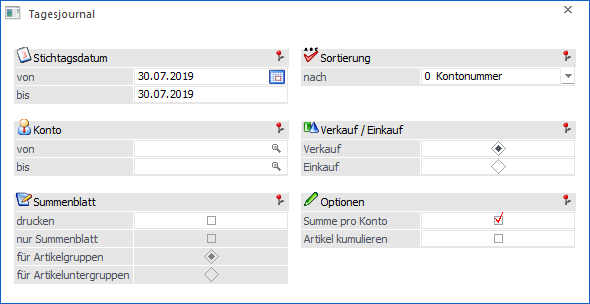
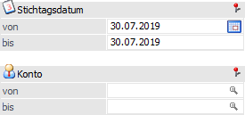
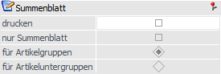
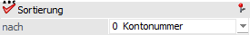
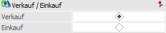
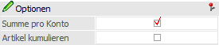
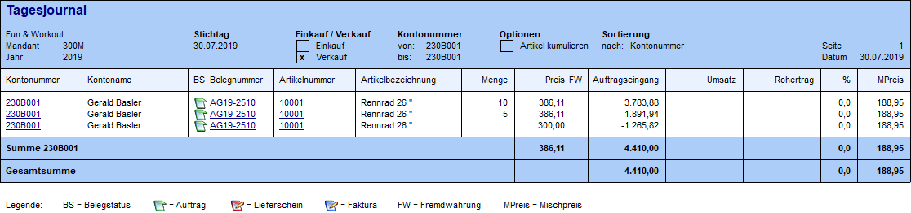
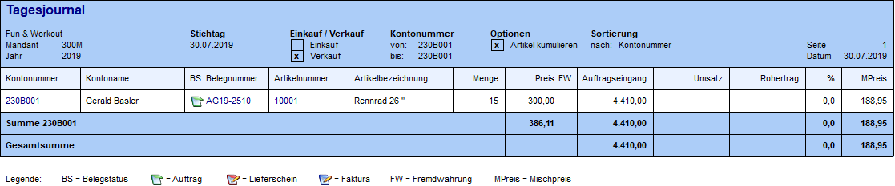
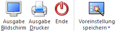

Mit dem Programm "Tagesjournal", welches über den Menüpunkt…
1 WinLine FAKT
1 Auswertungen
1 Beleganalyse
1 Tagesjournal
… aufgerufen wird, kann für einen speziellen Zeitraum ausgewertet werden, was für Belege erfasst bzw. verändert wurden.
Hinweis
Um die Auswertung nutzen zu können, muss die wertmäßige Beleghistorie in den FAKT-Parametern (Belege - Artikel - Bereich "Wertmäßige Beleghistorie beim Editieren speichern") aktiviert worden sein.

Für die Ausgabe stehen folgende Selektions- und Einstellungsmöglichkeiten zur Verfügung:
Selektion

Ø Stichtagsdatum
Angabe des auszuwertenden Datumsbereichs.
Ø Konto
An dieser Stelle kann die Auswertung auf bestimmte Kontonummern eingeschränkt werden.
Summenblatt

Ø Summenblatt drucken
Mit dieser Option kann festgelegt werden, ob der Ausdruck eines Summenblattes erfolgen soll. Wenn die Checkbox aktiviert wird, so können noch folgende Einstellungen getroffen werden:
ü nur Summenblatt
Es wird kein
Tagesjournal mehr ausgedruckt, sondern nur noch das Summenblatt.
ü für Artikelgruppen
Das
Summenblatt wird nach Artikelgruppen ausgewertet.
ü für Artikeluntergruppen
Das
Summenblatt wird nach Artikeluntergruppen ausgewertet.
Sortierung

Ø Sortierung nach
An dieser Stelle kann die Sortierung des Tagesjournals gewählt werden. Dabei stehen folgende Möglichkeiten zur Auswahl:
ü 0 - Kontonummer
ü 1 - Kontoname
Hinweis
Innerhalb eines Kontos erfolgt die Auswertung in der Reihenfolge der Belegstufen:
ü 1 - Aufträge
ü 2 - Lieferscheine
ü 3 - Fakturen
Die Reihenfolge innerhalb einer Belegstufe ermittelt sich aufgrund der Aktualität der Belege. Innerhalb eines Beleges erfolgt die Sortierung der Zeilen in jener Reihenfolge, in welcher die Artikel im Beleg erfasst wurden.
Verkauf / Einkauf

Ø Verkauf / Einkauf
Über die Einstellung wird festgelegt, ob das Tagesjournal für den Einkaufs- oder Verkaufsbereich ausgewertet werden soll.
Optionen

Ø Summe pro Konto
Durch Aktivieren dieser Option wird pro Konto eine Summenzeile eingefügt.
Ø Artikel kumulieren
Wird diese Option aktiviert, so wird pro Artikel nur eine Zeile ausgegeben, auch wenn ein Artikel mehrmals geändert wurde.
Beispiel
Es wurde der Auftrag "AG19-2510" angelegt und in diesem der Artikel "10001" mit der Menge 10 und einem Einzelpreis von 386,11€ erfasst.
Nachdem ersten Druck des Auftrages wird der Beleg wieder geöffnet und die Menge von 10 auf 15 erhöht. Anschließend wird der Beleg wieder geschlossen und erneut geöffnet um nun den Einzelpreis auf 300,00€ abzusenken.
Ohne aktivierte Option "Artikel kumulieren" würden 3 Zeilen in der Auswertung angezeigt (10 Stk. / 5 Stk. / 0 Stk. + geänderter Einzelpreis):

Mit aktivierter Option "Artikel kumulieren" würde nur 1 Zeile ausgegeben (15 Stk. + geänderter Einzelpreis):

Buttons

Ø Ausgabe Bildschirm
Mit Hilfe des Buttons "Ausgabe Bildschirm" oder der Taste F5 wird die Auswertung am Bildschirm ausgegeben.
Ø Ausgabe Drucker
Durch Anwahl des Buttons "Ausgabe Drucker" wird die Auswertung am Drucker ausgegeben.
Ø Ende
Durch Anwahl des Buttons "Ende" bzw. der Taste ESC wird die Auswertung geschlossen.
Ø Voreinstellung speichern
Durch Anwahl dieses Buttons erfolgt eine benutzerspezifische Speicherung aller im Fenster getätigten Einstellungen. Diese sogenannten "Voreinstellungen" können jederzeit wieder abgerufen werden und ermöglichen dadurch ein schnelleres und zielorientierteres Arbeiten (nähere Informationen entnehmen Sie bitte dem Kapitel "Die Voreinstellungen").